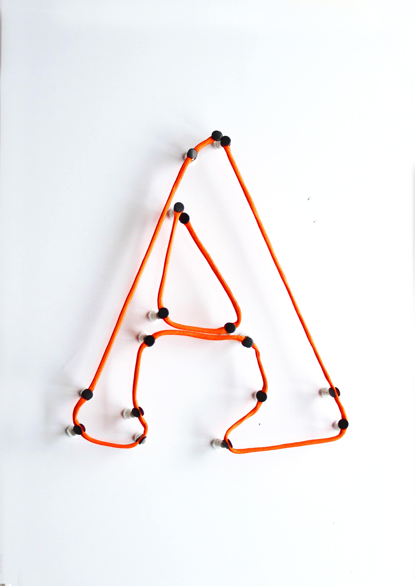

The project questions the way we categorise objects of our universe. Instead of figurative categories such as 'human', 'animal', 'house', it proposes categories based on movement: circular, linear, zooming in or out and miscellaneous. Each block represents one of common figurative categories. Columns represent movement categories. By moving the blocks between different columns the user can observe change in type of movement. Additionally, by clicking Shift or Enter keys,